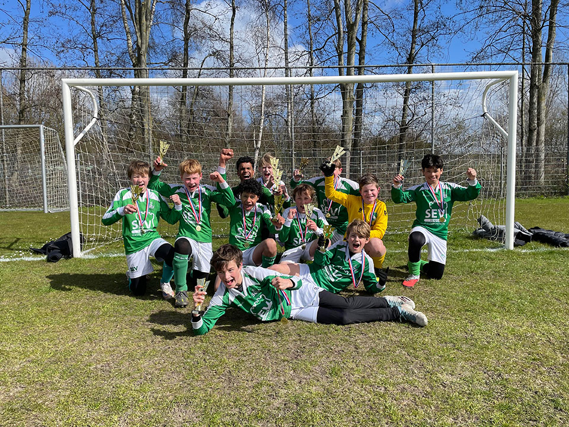
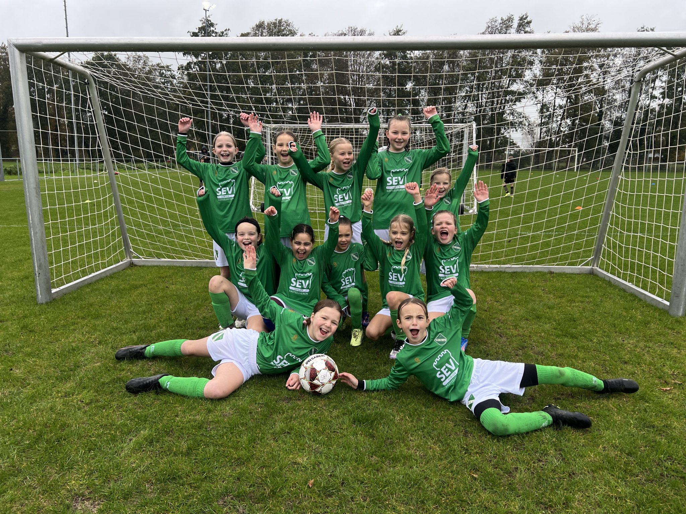
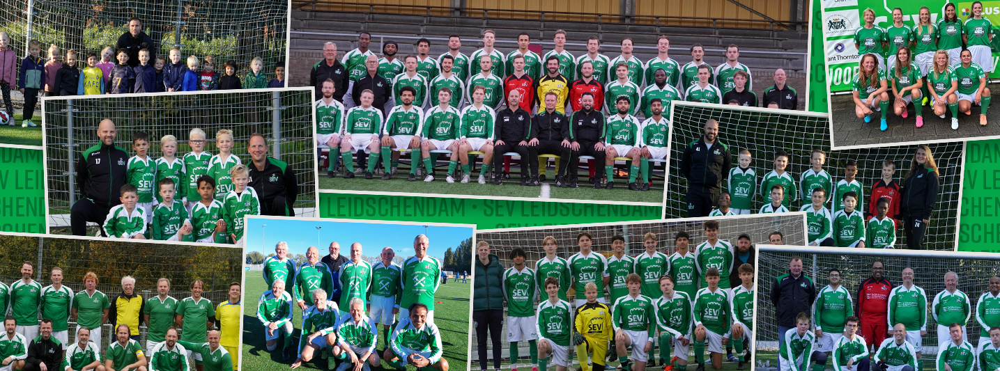
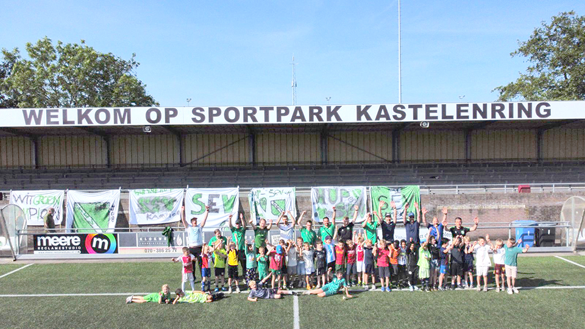

ClubnieuwsIndeling SEV 1 seizoen 2026–2027
De selectie maakt zich op voor een spannend nieuw seizoen.
Lees het hele bericht ↗Voetbalvereniging SEV · Sinds 1962
SEV is Sport én Vriendschap. Van je eerste balcontact tot de derde helft — op de Kastelenring kent de club je naam.
Wat er speelt
Alles wat leden willen weten, zonder zoeken. Rechtstreeks uit de huidige SEV-nieuwsbron.
Alle berichten →
ClubnieuwsDe selectie maakt zich op voor een spannend nieuw seizoen.
Lees het hele bericht ↗ Vereniging
VerenigingEen nieuwe fase voor een club die volop in beweging is.
Lees het hele bericht ↗
VoetbalEen mooie voetbalavond op de Kastelenring.
Lees het hele bericht ↗Meer dan negentig minuten


leden, tientallen teams en één gedeeld thuis op de Kastelenring.
Het verhaal achter de club
Ontdek onze historie, waarden en visuele richting. Het fundament onder alles wat we als club vertellen en laten zien.
Nieuw bij SEV?
Je hoeft niet meteen te kiezen. Kom langs, train een paar keer mee en ontdek waarom zoveel leden blijven hangen.
Plan een proeftraining →